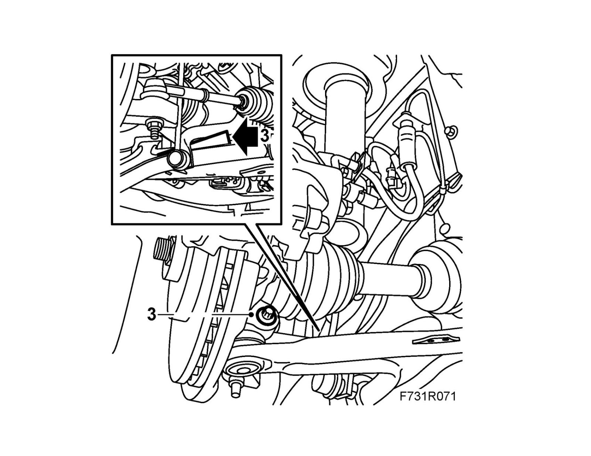
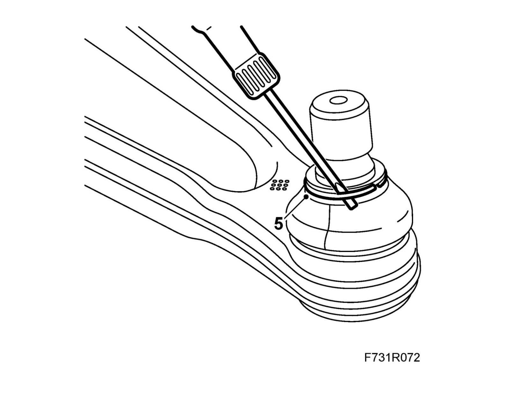
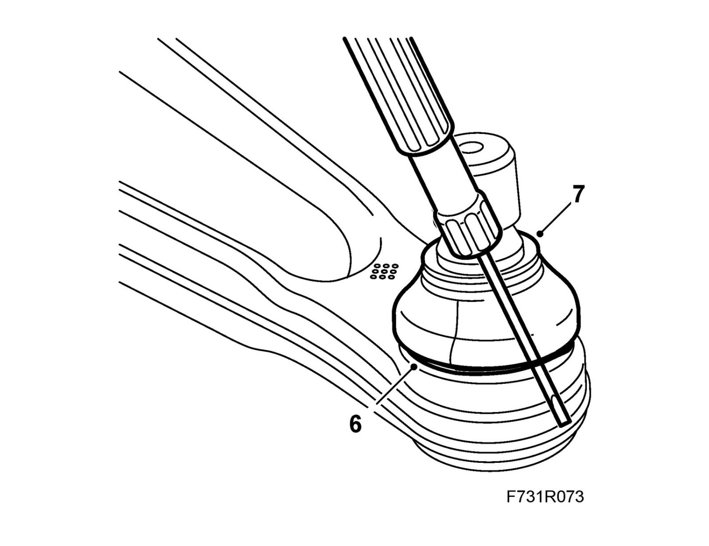
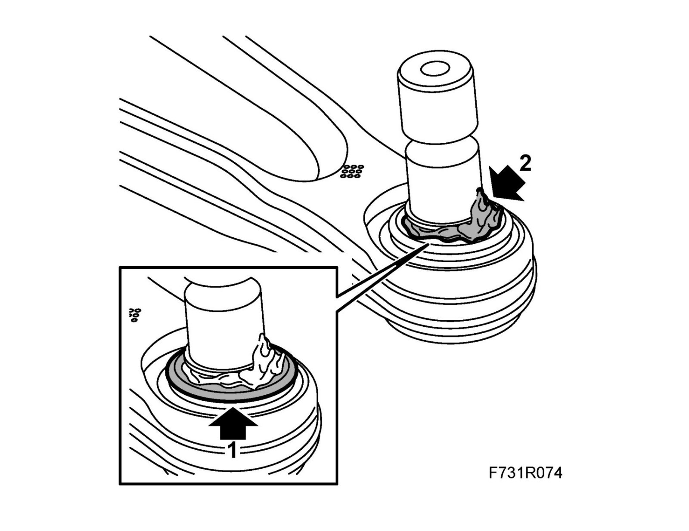
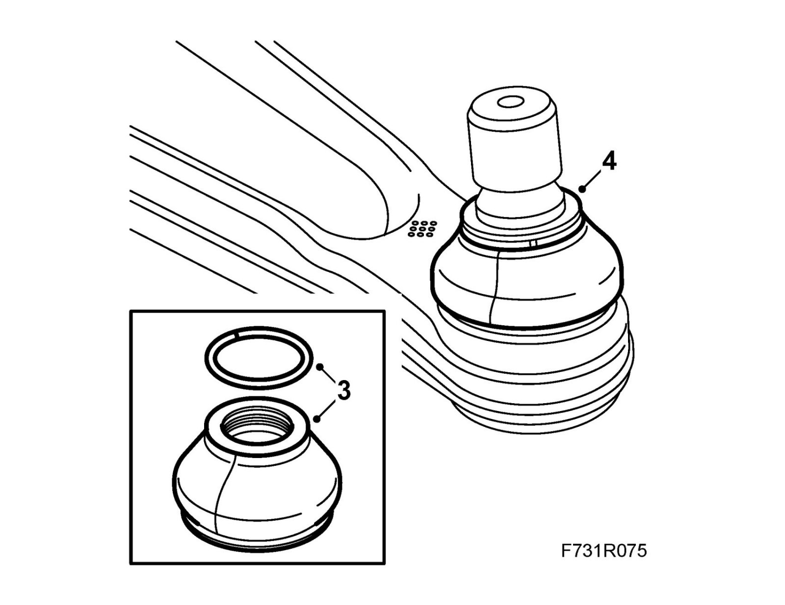
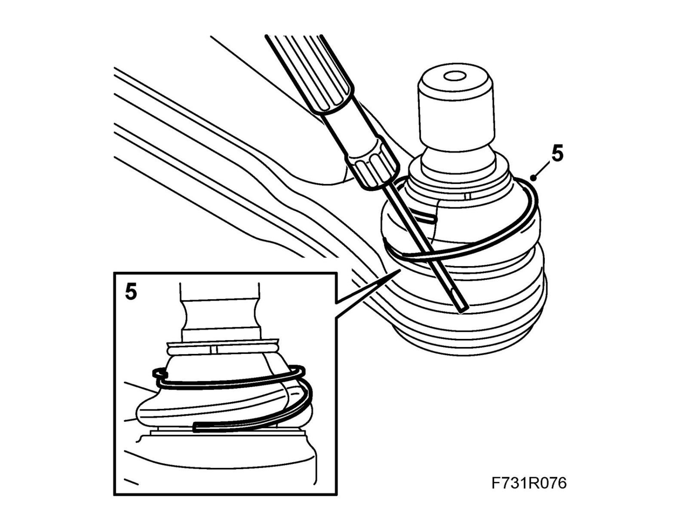

Ball Joint: Service and Repair
Ball joint dust excluder on the suspension arm1. Raise the car.
2. Remove the wheel.
3. Remove the bolt holding the suspension arm to the steering swivel member.

Depress the suspension arm and hold it down by placing a wedge between the suspension arm and the anti-roll bar.
4. Clean around the end of the arm and the dust excluder.
5. Remove the upper locking ring by pulling with a screwdriver positioned between the ring and the dust excluder.

6. Remove the lower locking ring by pulling with a screwdriver positioned between the ring and the dust excluder ring.

7. Remove the dust excluder.
To fit
1. Check that the surface around the pin is not damaged.
Note
If there is damage the suspension arm must be replaced.

2. Smear grease around the pin. Use the grease supplied with the kit.
3. Fit the smaller locking ring onto the dust excluder

4. Fit the dust excluder onto the pin.
Note
Smear a small amount of grease onto the inside of the dust excluder to facilitate assembly.
5. Fit the larger locking ring onto the dust excluder. Locate the end in the groove with a screwdriver. Slide the screwdriver around the dust excluder and feed in the ring.
Note
Be careful not to damage the dust excluder.

6. Fit the suspension arm to the steering swivel member with a new nut. Hold the bolt with a wrench so that the bolt does not rotate.
Tightening torque 50 Nm (37 lbf ft)
Warning
Press up the pin carefully.
The groove in the pin must be visible in the screw hole in the spindle housing.
If the rubber gaiter is pressed down, it will not seal properly to the swivel pin.
7. Fit the wheel.
8. Lower the car to the floor.